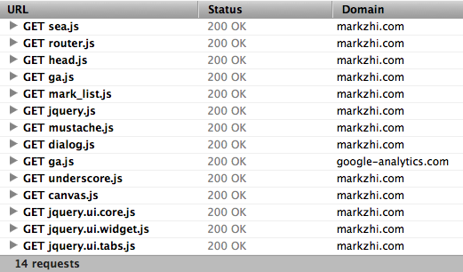
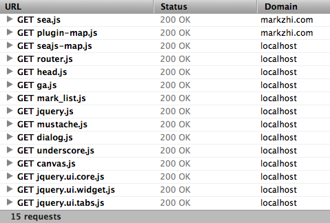

Sea.js Manual & Documentation
Map Plugin
If a js or css file is loaded by a module loader, it means that the module loader has chance to modify the module url before sending request. So, this feature can be used to map an online file to a local version. It is very convenient for debugging.
Let us take markzhi.com for illustration.
First, visit
http://markzhi.com/,
and you can find that all the js files are fetched from online server.

Then change the page url to
http://markzhi.com/?seajs-debug.
When the page is loaded again, a layer is floating at the bottom right corner.

Fill the input with http://localhost/seajs-map.js
The content of seajs-map.js is:
define(function() {
var rules = [];
// the map rules for markzhi.com
rules.push([
'http://markzhi.com/assets/',
'http://localhost/~lifesinger/markzhi/portal/src/main/webapp/assets/'
]);
seajs.config({'map': rules});
});
The rules can also be a regex:
// replace compressed version to debug version rules.push([ /^(.*)\.js$/i, '$1-debug\.js' ]);
Finally, click the "Refresh" button in the floating layer, and then you can
see that all the js files are loaded from localhost now except
sea.js and plugin-map.js.

You can also click the "Hide" button to hide the floating layer, or click the "Exit" button to disable the debug mode.
Adding seajs-debug to the query string will bring the debug
console layer to front. In addition to this approach, sometimes
using a bookmarklet is more convenient.
SeaJS Map Tool (Drag me to the favorite bar, and click it when needed)
** TIPS: a "[debug] - " prefix will appear in the document title when the page is under debugging mode.